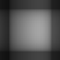

19 Decompositions in Action
Prerequisites: matrix decompositions (covered in the Eigenvalues and Decompositions chapter). The chapter applies SVD, eigendecomposition, and QR iteration without re-deriving them.
This chapter shows three applications of matrix decompositions:
- SVD for image compression
- Eigendecomposition for Principal Component Analysis
- QR iteration for computing eigenvalues
(ns lalinea-book.decompositions-in-action
(:require
;; La Linea (https://github.com/scicloj/lalinea):
[scicloj.lalinea.linalg :as la]
[scicloj.lalinea.elementwise :as el]
[scicloj.lalinea.tensor :as t]
;; Tensor <-> BufferedImage conversion:
[tech.v3.libs.buffered-image :as bufimg]
;; Dataset manipulation (https://scicloj.github.io/tablecloth/):
[tablecloth.api :as tc]
;; Interactive Plotly charts (https://scicloj.github.io/tableplot/):
[scicloj.tableplot.v1.plotly :as plotly]
;; Seeded random number generation (https://generateme.github.io/fastmath/):
[fastmath.random :as frand]
;; Visualization annotations (https://scicloj.github.io/kindly-noted/):
[scicloj.kindly.v4.kind :as kind]
;; Visualization helpers:
[scicloj.lalinea.vis :as vis]
[clojure.math :as math]))Image compression with SVD
The singular value decomposition writes any matrix as \(A = U \Sigma V^T\) where \(U\) and \(V\) are orthogonal and \(\Sigma\) is diagonal. The diagonal entries (singular values) are sorted by magnitude — the first few capture most of the “energy” in the matrix.
By keeping only the top \(k\) singular values, we get a rank-\(k\) approximation that compresses the image.
A synthetic test image
A pattern with low-frequency structure (smooth gradients and geometric shapes) compresses well with SVD.
(def img-size 100)(def test-image
(t/->real-tensor
(t/materialize
(t/compute-tensor [img-size img-size]
(fn [r c]
(let [x (/ (- c 50.0) 50.0)
y (/ (- r 50.0) 50.0)
circle (if (< (+ (* x x) (* y y)) 0.5) 200.0 50.0)
gradient (* 100.0 (+ 0.5 (* 0.5 (math/sin (* 3.0 x)))))]
(+ (* 0.6 circle) (* 0.4 gradient))))
:float64))))Display the original:
(let [t (t/compute-tensor [img-size img-size 3]
(fn [r c _ch]
(int (max 0 (min 255 (test-image r c)))))
:uint8)]
(bufimg/tensor->image t))SVD decomposition
(def svd-result (la/svd test-image))The singular values drop off rapidly — most of the information is in the first few:
(:S svd-result)#la/R [:float64 [100] [9484 1262 1052 691.6 533.8 406.2 354.6 296.0 250.4 238.8 214.5 188.1 179.1 172.0 161.7 145.2 126.1 113.6 112.8 110.5 ...]](-> (tc/dataset {:index (range (count (:S svd-result)))
:singular-value (:S svd-result)})
(plotly/base {:=x :index :=y :singular-value})
(plotly/layer-line)
plotly/plot)Rank-k reconstruction
A purely functional approach: slice the first \(k\) columns of \(U\), the first \(k\) singular values, and the first \(k\) rows of \(V^T\), then multiply them back together.
(def reconstruct-rank-k
(fn [svd-result k]
(let [{:keys [U S Vt]} svd-result
Uk (t/submatrix U :all (range k))
Sk (t/diag (take k S))
Vtk (t/submatrix Vt (range k) :all)]
(la/mmul (la/mmul Uk Sk) Vtk))))Compare rank 1, 5, 10, and 50 approximations:
Rank 1 — captures only the dominant direction:
(bufimg/tensor->image (vis/matrix->gray-image (reconstruct-rank-k svd-result 1)))
Rank 5 — the circular structure starts to appear:
(bufimg/tensor->image (vis/matrix->gray-image (reconstruct-rank-k svd-result 5)))Rank 20 — nearly indistinguishable from the original:
(bufimg/tensor->image (vis/matrix->gray-image (reconstruct-rank-k svd-result 20)))Compression ratio
The original stores \(n \times m\) values. Rank \(k\) stores \(k(n + m + 1)\) values.
(-> (tc/dataset {:k [1 5 10 20 50]
:ratio (mapv (fn [k]
(/ (* 1.0 k (+ img-size img-size 1))
(* img-size img-size)))
[1 5 10 20 50])
:error (mapv (fn [k]
(la/norm (el/- test-image
(reconstruct-rank-k svd-result k))))
[1 5 10 20 50])})
(plotly/base {:=x :ratio :=y :error})
(plotly/layer-point {:=mark-size 10})
(plotly/layer-line)
plotly/plot)Error decreases monotonically as rank increases:
(let [errors (mapv (fn [k] (la/norm (el/- test-image (reconstruct-rank-k svd-result k))))
[1 5 10 20 50])]
(every? (fn [[a b]] (> a b)) (partition 2 1 errors)))truePrincipal Component Analysis
PCA finds the directions of maximum variance in data. Given a centered data matrix \(X\), the principal components are the eigenvectors of the covariance matrix \(\frac{1}{n-1} X^T X\).
Generate 2D data with known covariance
We create points distributed along a tilted ellipse.
(def n-points 200)(def data-tensor
(let [theta (/ math/PI 6)
cos-t (math/cos theta) sin-t (math/sin theta)
rng (frand/rng :mersenne 42)
flat (->> (range n-points)
(mapcat (fn [_]
(let [p1 (frand/grandom rng 0.0 3.0)
p2 (frand/grandom rng 0.0 0.8)]
[(+ (* cos-t p1) (* (- sin-t) p2))
(+ (* sin-t p1) (* cos-t p2))])))
(t/make-container :float64))]
(t/reshape flat [n-points 2])))Center the data
(def X
(let [col0 (t/select data-tensor :all 0)
col1 (t/select data-tensor :all 1)
mean0 (/ (el/sum col0) n-points)
mean1 (/ (el/sum col1) n-points)
means (t/compute-tensor [n-points 2]
(fn [_i j] (if (zero? j) mean0 mean1))
:float64)]
(t/materialize (el/- data-tensor means))))Compute covariance matrix and eigendecompose
(def cov-matrix
(el/scale (la/mmul (la/transpose X) X) (/ 1.0 (dec n-points))))cov-matrix#la/R [:float64 [2 2]
[[6.507 3.590]
[3.590 2.709]]]
A covariance matrix is always symmetric:
(la/close? cov-matrix (la/transpose cov-matrix))true(def pca-eigen (la/eigen cov-matrix))Eigenvalues = variances along each principal axis:
(reverse (la/real-eigenvalues cov-matrix))(8.669438066832745 0.5467251530363793)Visualize principal axes
The eigenvectors point along the directions of maximum variance. We overlay them on the scatter plot, scaled by the square root of the corresponding eigenvalue.
(let [{:keys [eigenvalues eigenvectors]} pca-eigen
reals (el/re eigenvalues)
sorted-idx (el/argsort > reals)
lam1 (double (reals (first sorted-idx)))
ev1 (nth eigenvectors (first sorted-idx))
lam2 (double (reals (second sorted-idx)))
ev2 (nth eigenvectors (second sorted-idx))
pc1-x (* (math/sqrt lam1) (ev1 0 0))
pc1-y (* (math/sqrt lam1) (ev1 1 0))
pc2-x (* (math/sqrt lam2) (ev2 0 0))
pc2-y (* (math/sqrt lam2) (ev2 1 0))
pts (mapv (fn [i] {:x (X i 0) :y (X i 1) :type "data"})
(range n-points))
pc1-pts [{:x 0.0 :y 0.0 :type "PC1"}
{:x pc1-x :y pc1-y :type "PC1"}]
pc2-pts [{:x 0.0 :y 0.0 :type "PC2"}
{:x pc2-x :y pc2-y :type "PC2"}]]
(-> (tc/dataset (concat pts pc1-pts pc2-pts))
(plotly/base {:=x :x :=y :y :=color :type})
(plotly/layer-point {:=mark-size 4 :=mark-opacity 0.4})
(plotly/layer-line)
plotly/plot))Project onto first principal component
Projection is a matrix multiply: \(X_{\text{proj}} = X \cdot v_1 \cdot v_1^T\)
(let [{:keys [eigenvalues eigenvectors]} pca-eigen
reals (el/re eigenvalues)
sorted-idx (el/argsort > reals)
ev1 (nth eigenvectors (first sorted-idx))
;; Project: X * v1 * v1^T
projected (la/mmul (la/mmul X ev1) (la/transpose ev1))
;; Fraction of variance explained
variances (el/sort > reals)
explained (/ (first variances) (el/sum variances))]
explained)0.940677574822276The first PC explains most of the variance:
QR algorithm for eigenvalues
The QR algorithm is the standard method for computing eigenvalues. It repeatedly decomposes \(A = QR\) and forms \(A' = RQ\). The diagonal of \(A'\) converges to the eigenvalues.
We track convergence of the diagonal entries.
(def test-matrix
(t/matrix [[4 1 0]
[1 3 1]
[0 1 2]]))True eigenvalues for comparison:
(def true-eigenvalues
(la/real-eigenvalues test-matrix))true-eigenvalues#la/R [:float64 [3] [1.268 3.000 4.732]]QR iteration
(def qr-history
(loop [A test-matrix
k 0
history []]
(if (>= k 50)
history
(let [{:keys [Q R]} (la/qr A)
A-next (la/mmul R Q)
;; Extract diagonal
diag (el/sort (t/diag A-next))
;; Off-diagonal magnitude
off-diag (math/sqrt
(+ (let [v (A-next 0 1)] (* v v))
(let [v (A-next 1 0)] (* v v))
(let [v (A-next 0 2)] (* v v))
(let [v (A-next 2 0)] (* v v))
(let [v (A-next 1 2)] (* v v))
(let [v (A-next 2 1)] (* v v))))]
(recur A-next (inc k)
(conj history {:iteration (inc k)
:off-diagonal off-diag
:eig-1 (nth diag 0)
:eig-2 (nth diag 1)
:eig-3 (nth diag 2)}))))))The off-diagonal elements converge to zero — the matrix becomes diagonal:
(-> (tc/dataset qr-history)
(plotly/base {:=x :iteration :=y :off-diagonal})
(plotly/layer-line)
plotly/plot)(:off-diagonal (last qr-history))2.2761962315757554E-10The diagonal converges to the true eigenvalues:
(let [final (last qr-history)
computed (el/sort (t/row [(:eig-1 final) (:eig-2 final) (:eig-3 final)]))]
(la/close? computed
true-eigenvalues 1e-4))trueConvergence of each eigenvalue
(-> (tc/dataset (mapcat (fn [{:keys [iteration eig-1 eig-2 eig-3]}]
[{:iteration iteration :value eig-1 :eigenvalue "λ₁"}
{:iteration iteration :value eig-2 :eigenvalue "λ₂"}
{:iteration iteration :value eig-3 :eigenvalue "λ₃"}])
qr-history))
(plotly/base {:=x :iteration :=y :value :=color :eigenvalue})
(plotly/layer-line)
plotly/plot)